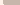
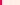
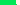

In the article introducing
the pixel art bot village, we saw art that was completely randomly
generated. The pixel art bot was blindly drawing. Now the bot can see, and it’s
only 34.5% happy with what it has produced.
Sight is more than input. Imagine a window: light passes through it, but a window can hardly be said to see. Sight requires some level of processing.
The bot sees by taking each color in the palette and calculating the percentage of the image that contains those colors. It's as if it is seeing without a lense: a blur of colors in proportions but no shapes.
The bot has an idea of the ideal proportion of each color it wants to see in an image. It use this to give a rating to its artwork: on average it is 25% happy with the artwork it generated last time by randomly walking across the canvas.
Each component of the bot’s ideal was chosen completely independently. It’s as though there are 16 independent people within the bot’s mind, all wanting something different. Mr. Brown wants the image to be 43% brown. Ms. Dark Blue is greedy and wants the 94% of the image to be blue. The actual table, based on the excellent PICO-8 palette, is
| Black | 60.0% | |
| Dark Blue | 94.0% | |
| Dark Purple | 66.5% | |
| Dark Green | 43.8% | |
| Brown | 42.5% | |
| Dark Gray | 68.7% | |
| Light Gray | 6.6% | |
| White | 15.7% |  |
| Red | 9.7% |  |
| Orange | 30.1% | |
| Yellow | 51.5% | |
| Green | 81.4% |  |
| Blue | 21.4% | |
| Indigo | 38.1% | |
| Pink | 31.8% | |
| Peach | 46.9% |
As you can see, these ideal proportions definitely do not add up to 100%! This means that not everyone can by pleased by a single work of art. This independence and contradiction within a single mind seems a little weird, but it may actually reflect reality in human brains.
How the art eventually looks depends entirely on how we
choose to apply these preferences. Ignoring the wishes of the 16 colors results
in random artwork, very much like those generated without any ability for
preferences at all.
Instead, we can choose the best pixel to
draw next based on the preferences. If we only follow the preferences of a
single color, we end up with an image with only a few colors.
We could instead drawing the pixel that most
improves the overall rating, taking into account all 16 different
preferences.
Even though all colors contributed to the overall rating, the bot only uses a few different colors. When painting the pixel that will most improve the overall rating, it paints the color that is most easily pleased. For example, Red is happiest when about 10% of the image is red. This means that red gets happier for each additional red pixel added. Compare to dark blue, who desired a whopping 94% of the image to be dark blue. Each additional pixel of dark blue makes Dark Blue only slightly happier. Red gets almost 10x happier for each red pixel than Dark Blue gets for each dark blue pixel.
Why does even the “ideal” strategy, just please only a handful of the colors? C.G.P. Grey made a point in his Rules for Rulers video that I think applies here. Even in a democracy, the leader has key supporters. In this case, the overall mind chooses to please those who can be pleased and ignores those with preferences that aren’t compatible with the overall happiness of the group. This might not be the fairest way of choosing colors to paint, but I think I could prove that (at least with these piecewise linear preferences) that this strategy does maximize the overall average.
Rather than choosing based on the absolute maximum rating, I want to see what happens when each color votes for the next action. There are a great deal many voting systems for picking the single next action from multiple possibilities. I would love to try each of them out to see which does the “best” job.
I want to help the bots see shapes, not just color
proportions. I did a
quick experiment in seeing corners.
I like the image that the corner-seeing bot generated, but it never finished this drawing. It got stuck going back and forth. I think the way the bot attempts to choose the very best next pixel to draw is too precise. I have had to do a lot of unit testing to prevent the bots from getting stuck, even with the less complicated vision without shapes.
A little more randomness and less precision might prevent the bot from getting completely stuck. For example, with the completely random walk, there is always a chance that the bot will wander over to the exit button and finish the artwork.
I somewhat arbitrarily chose 64x64 pixels for the bots, since that's what I did for most of my pixel art, but it would be nice if the bots were flexible to use both smaller and larger canvas sizes. For example, PICO-8 is 128x128 with 8x8 sprites. It would be cool to be able to use the artwork in a PICO-8 cart.
Hand-coding how to see shapes is fine to get started. It is a promising approach for adding simple vision perceptions like edge and corner detection. Eventually, I'd like to use machine learning techniques, such as neural networks, for perception. I want to make it as easy as possible to teach the bot new shapes, probably by providing labelled examples.
If the bot can learn by labelled examples, it will also be possible for bots to communicate and teach each other by providing artworks and labels with what their perceptions of the artwork are. This is my true goal: bots and I, all making artwork, all teaching each other to be better artists.
It's somewhat pointless to communicate & critique each other's artworks if we know that opinions never change. I will need to do some experiments with different ways that interests can change over time. One initial thought was that the colors that are not pleased at all with the artwork may update their preferences to desire fewer pixels. Perhaps colors that are 100% pleased get a little greedier and desire more pixels of their color the next round?
Does this interest you? Can you code? I'd love to see what you do with these techniques. My code is open sourced here if you want to use it to jumpstart your own pixel art bots.